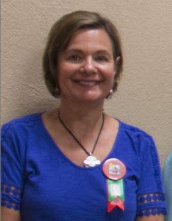
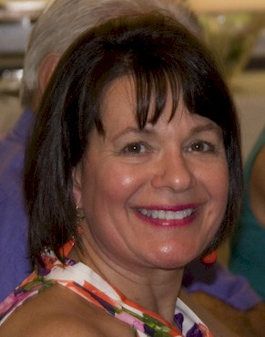

| 1967 Click for Page Elementary Photo |
 2017 |
|  2012 |
Other activities that keep me busy include a monthly book-club, browsing art fairs, interior decorating, attending MN Gopher football games, coordinating church volunteers for a monthly meal at a homeless shelter, exercising and travel.
Our travels often include hiking the many state parks along the North Shore of Lake Superior from Duluth to Grand Marais in the Fall; and visiting family and friends. We enjoy our family trips to visit my brother, Jim, and his family in Ankeny, Iowa; visiting my sister, Rene, and her family in Duncan, Vancouver Island, BC; and visiting our younger daughter and my older brother, John, and his wife, in Colorado. In the winter months, we have enjoyed visiting friends in AZ and Florida; and love returning to Maui, HI for a few weeks.
We have taken a few international trips. Our last two trips to Peru/Machu Pichu and Portugal/lower Spain through Overseas Adventure Travel, were fantastic. We are now looking forward to a trip to Hong Kong and Vietnam early next year.